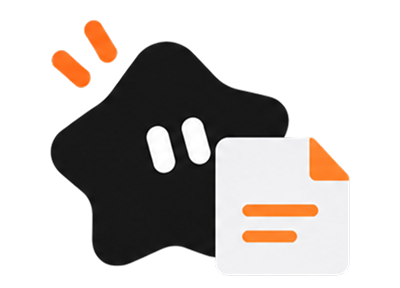
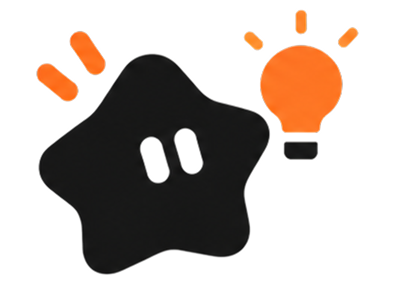
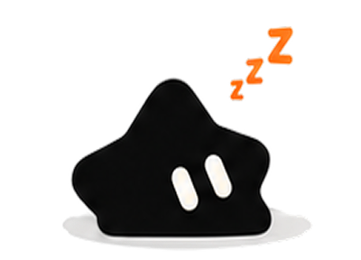

Empty state 空状态
类型一：空状态
插画（可替换）+ 标题 + 说明 + 操作按钮。标题和按钮均可省略。
子组件：插画
显示尺寸 100×72，文件位于 assets/illustrations，按场景替换。

资料库 · library.png
技能 · skill.png
暂无 · empty.png插画（可替换）+ 标题 + 说明 + 操作按钮。标题和按钮均可省略。
显示尺寸 100×72，文件位于 assets/illustrations，按场景替换。

资料库 · library.png
技能 · skill.png
暂无 · empty.png